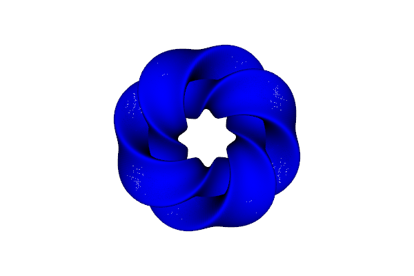
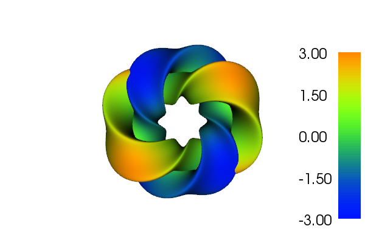

Since FEniCS version 1.2, the FEniCS Project provides user-friendly and efficient support for solving differential equations over domains of differing topological and geometric dimension. For instance, you can specify and solve an equation defined over the surface of a ball (imagine the surface of the earth). This surface is a domain of topological dimension 2, but embedded in three spatial dimensions and thus of geometric dimension 3. In general, FEniCS supports simplicial meshes of geometric dimension \(n = 1, 2, 3\) and topological dimension \(m \leq n\).
Partial differential equations posed over such meshes, so-called immersed manifolds, are of particular importance in studying geophysical flows; for instance, ocean and atmosphere simulations crucially rely on the capability to solve equations over the sphere. Similarly, a number of geological applications involve flow equations defined over networks of fractures (intersecting two-dimensional planes embedded in three dimensions). Physiological simulation scenarios may involve networks of for instance blood vessels (networks of lines or curves embedded in three dimensions).
Given such a mesh, finite element spaces (including all our favorite families of finite elements), measures and variational forms may be defined as usual. For instance, here is a code snippet that solves an elliptic equation over a mesh of a Gray’s Klein bottle, a non-orientable two-dimensional surface embedded in three dimensions.
from fenics import *
# Import the mesh
mesh = Mesh("klein.xml.gz")
# Define the function space of choice as usual
V = FunctionSpace(mesh, "CG", 2)
u = TrialFunction(V)
v = TestFunction(V)
# Define the variational form as usual, but pay attention to the
# definition of derivatives and measures
f = Expression("x[0]*x[1]*x[2]", degree=3)
c = Constant(0.03)
a = c*u*v*dx + inner(grad(u), grad(v))*dx
L = f*v*dx
# Solve and plot as usual
u = Function(V)
solve(a == L, u)
plot(mesh, title="Gray's Klein bottle")
plot(u, title="u", interactive=True)
This runs seamlessly in serial or parallel using MPI, and the results are plotted below:
 Left: A mesh of Gray’s Klein bottle, a non-orientable two-dimensional surface without boundary embedded in 3D [2, 3]. Right: The solution to the elliptic PDE example given above over this mesh.
For more information, including the definitions of spatial derivatives and integration measures used, and lots of additional examples, see the accompanying paper [3].
[1] http://paulbourke.net/geometry/klein/
[2] Mesh of Gray’s Klein bottle, courtesy of Patrick E. Farrell and Simon W. Funke.
[3] Automating the solution of PDEs on the sphere and other manifolds in FEniCS 1.2; M.E. Rognes, D.A. Ham, C.J. Cotter, and A.T.T. McRae; Geosci. Model Dev., 6; 2099-2119; 2013. http://www.geosci-model-dev.net/6/2099/2013/ (doi:10.5194/gmd-6-2099-2013)
{kind=link}
{kind=link}